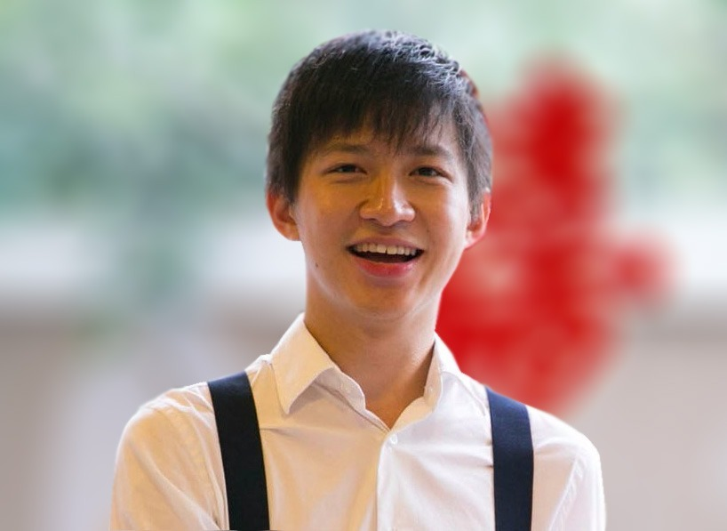

I am a staff research scientist at DeepMind. My research interests are in machine learning and natural language processing.
I received my PhD from Carnegie Mellon University where I was advised by Noah Smith as a member of Noah's ARK.
Prior to CMU, I was a Monbukagakusho (文部科学省) fellow at the University of Tokyo in Tanaka-Ishii's Lab.
Contact: dyogatama@google.com.
Google Scholar, Twitter.
News:
- January 2021: An article on semiparametric language models has been accepted to Transactions of the Association for Computational Linguistics
.
- January 2021: A paper on random feature attention has been accepted to ICLR 2021 as a spotlight presentation.
- November 2020: I gave talks at NYU and Cambridge on Semiparametric Language Models (video).
- November 2020: I will serve as an area chair for ACL 2021 and ICML 2021.
- July 2020: I gave a talk at ICML 2020 Retrospectives Workshop on Retrospectives on Learning Language Representations.
- June 2020: I will serve as a virtual infrastructure chair for EMNLP 2021.
- June 2020: I will serve as an area chair for ICLR 2021.
- April 2020: I will serve as an action editor for TACL (2020-2022).
- April 2020: A paper on the cross-lingual transferability of monolingual representations and a position paper on unsupervised cross-lingual learning have been accepted to ACL 2020.
- March 2020: I will serve as an area chair for NeurIPS 2020.
- February 2020: A new preprint on modeling latent skills for multitask language generation.
- February 2020: I will serve as an area chair for EMNLP 2020.
- December 2019: A paper on an information theoretic perspective of language representation learning has been accepted to ICLR 2020 as a spotlight presentation.
- December 2019: Flying to NeurIPS 2019. Check out our episodic memory paper!
- October 2019: AlphaStar in Nature!
Interns and Student Collaborators:
- Paul Michel, PhD student, Carnegie Mellon University (Spring 2021, intern).
- Devendra Sachan, PhD student, MILA/McGill University (Spring 2021, student collaborator).
- Hao Peng, PhD student, University of Washington (Fall 2020, intern).
- Mikel Artetxe, PhD student, University of the Basque Country (Summer 2019, intern).
- Jean Maillard, PhD student, University of Cambridge (Summer 2017, student collaborator).
- Yishu Miao, PhD student, University of Oxford (Summer 2017, intern).
Save Style files were provided by Manaal Faruqui (thanks Manaal!), are licensed under a Creative Commons Attribution 3.0 Unported License.
Style files were provided by Manaal Faruqui (thanks Manaal!), are licensed under a Creative Commons Attribution 3.0 Unported License.